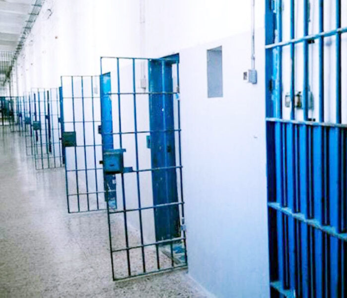

Prigioni italiane
Benvenuti in questa pagina web
1
Ucciardone
Livello di pericolosità:8
Condizione struttura:
L'edificio è molto antico e presenta vari problemi legati alla sua età. I lavori degli ultimi anni ne hanno migliorato significativamente le condizioni generali, in particolare quelle dei padiglioni n° 5 e 7. Il 5° padiglione è stato completamente ristrutturato di recente, il che ha creato ambienti esteticamente e architettonicamente gradevoli, che valorizzano la cifra storica dell'edificio. Purtroppo, si verificano già alcuni problemi di infiltrazione d'acqua dalle coperture visibili, con grandi marche di umidità nella maggior parte degli ambienti dell'ultimo livello.
Per maggiori info clicca qui
2

Rebibbia
Livello di pericolosità:9
Condizione struttura:
L'edificio necessita di interventi di manutenzione. Al momento della visita erano in ristrutturazione, in vista di una prossima apertura (giugno 2019) un corridoio al piano terra con 58 nuovi posti, due corridoi rispettivamente al primo e secondo piano. Il reparto G9 è quello che versa in condizioni più critiche. Di prossima apertura nuove stanze detentive (da 2 o da 6) con doccia nel bagno, ma saranno realizzate anche docce comuni. Questi lavori sono stati realizzati dai detenuti.
Per maggiori info clicca qui
3
Regina Coeli
Livello di pericolosità:7
Condizione struttura:
L'Istituto si divide in due parti, separate da 2 rotonde. Le sezioni vanno in ordine numerico. Nella prima rotonda ci sono la sezione prima, seconda, terza e quarta quest'ultima ospita persone tossicodipendenti. Dalla seconda rotonda si sviluppano altre 4 sezioni: la quinta è a vigilanza dinamica ed ospita in prevalenza lavoranti, anche la sesta è a custodia aperta. La settima sezione attualmente ospita nuovi giunti che devono sottoporsi all'isolamento preventivo causa Covid e l' ottava è la sezione protetta.
Per maggiori info clicca qui
4
San Vittore
Livello di pericolosità:8
Condizione struttura:
Le condizioni dell'istituto sono discrete, soprattutto in considerazione della vetustà della struttura. I reparti danneggiati dopo le rivolte del 9 Marzo 2020 sono stati completamente ripristinati nelle condizioni precedenti. Non sono in programma al momento altre importanti ristrutturazioni.
Per maggiori info clicca qui
5
Badu e Carros
Livello di pericolosità:7.5
Condizione struttura:
Nell'istituto sono stati realizzati recentemente dei lavori di ristrutturazione e che hanno interessato la sezione di Media Sicurezza, alcuni corridoi e la sezione AS2 che ha subito dei recenti lavori di tinteggiatura interna. Dal 2018 è stata aperta una nuova sezione, la quinta, di 3 piani: il piano terra dedicato alle attività ricreative e trattamentali e il 1 e il 2 piano alla custodia in cella dei detenuti. Allo stato attuale sono previsti dei lavori nella ex sezione femminile, mentre alcuni spazi necessitano ancora di interventi di restauro.
Per maggiori info clicca qui
Ecco alcuni libri su storie di detective che potrebbero interessarti
Ecco alcuni articoli direttamente dal New York Times
L’Associazione Arpamagica, insieme ad alcuni docenti del corso di formazione in musicoterapia, ha messo a punto un progetto d’intervento negli istituti penitenziari proponendo attività di musicoterapia rivolte ai detenuti che lo desiderano e un programma particolare dedicato alle donne del carcere di Bollate. L’obiettivo è quello di creare attraverso il ” far musica ” un clima non conflittuale e non competitivo nel quale trovare nuove modelli relazionali improntati alla cooperazione e alla condivisione empatica. Ecco qui puoi cercare gli album di canzoni che proporresti in un carcere?